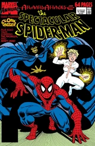
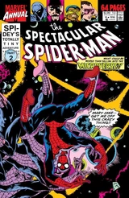
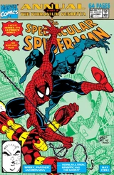
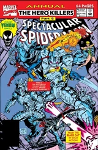
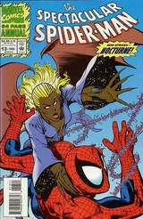
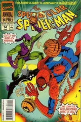

Spectacular Spider-Man Annual (1988 - 1994)
| Comic Book | Release Date | Cover |
|---|---|---|
| Spectacular Spider-Man Annual #8 Return to Sender |  | |
| Spectacular Spider-Man Annual #9 The Serpent in the Shadow |  | |
| Spectacular Spider-Man Annual #10 Into the Microverse |  | |
| Spectacular Spider-Man Annual #11 The Ghost and the Machine |  | |
| Spectacular Spider-Man Annual #12 The Hero Killers, Part 2: Down and Downer |  | |
| Spectacular Spider-Man Annual #13 Emergence |  | |
| Spectacular Spider-Man Annual #14 Cycles & Circles |  |